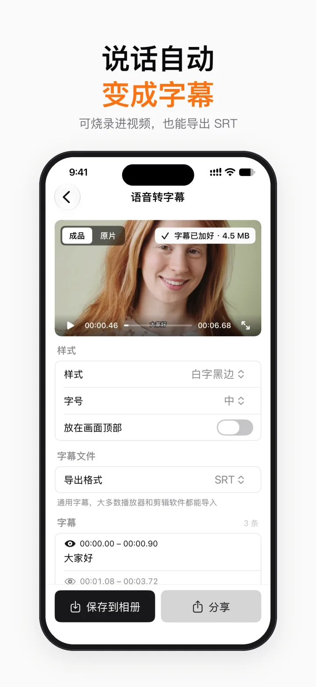
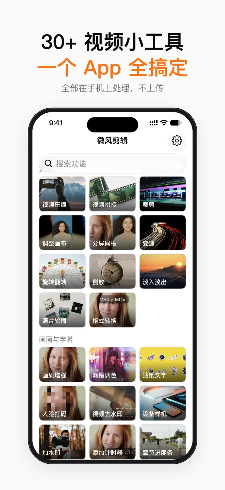
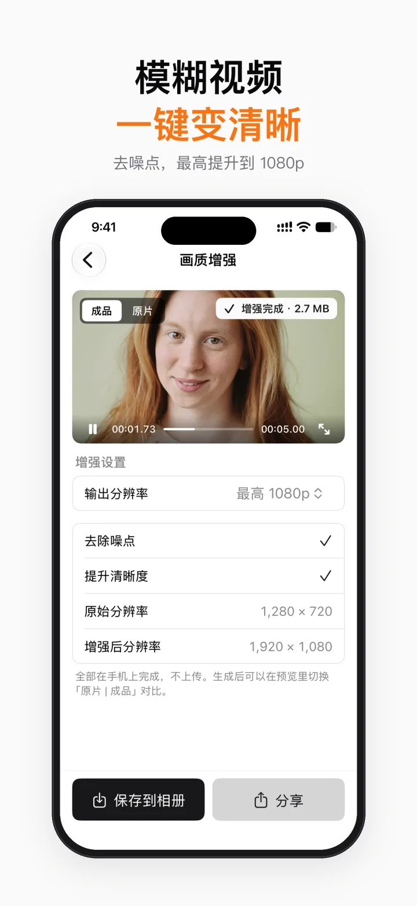
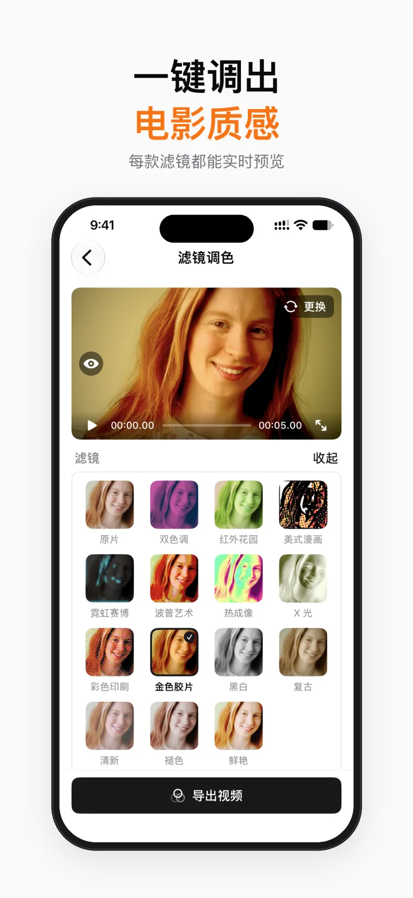
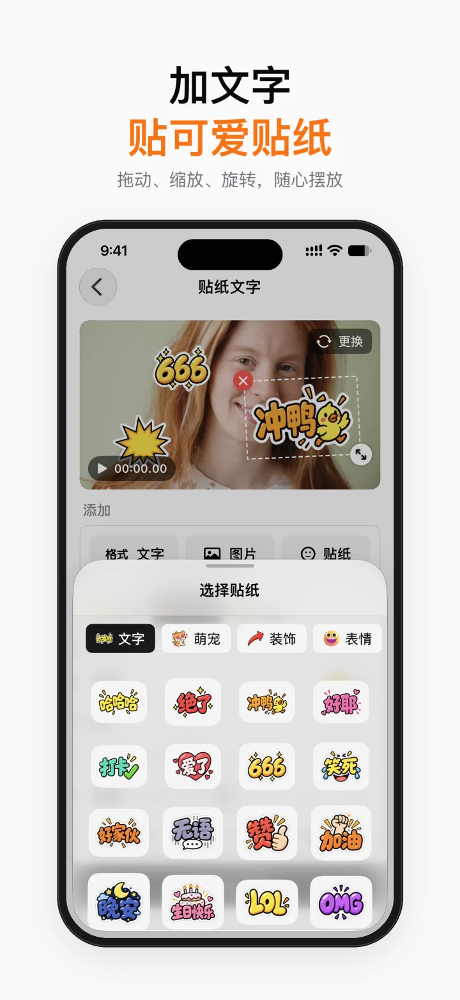
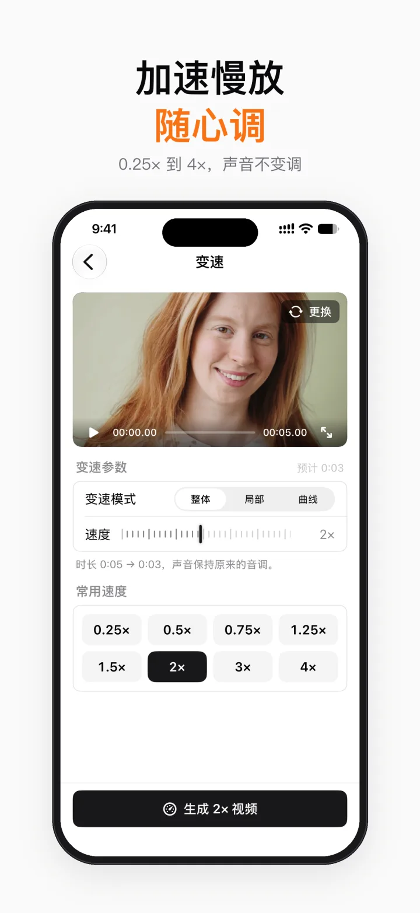
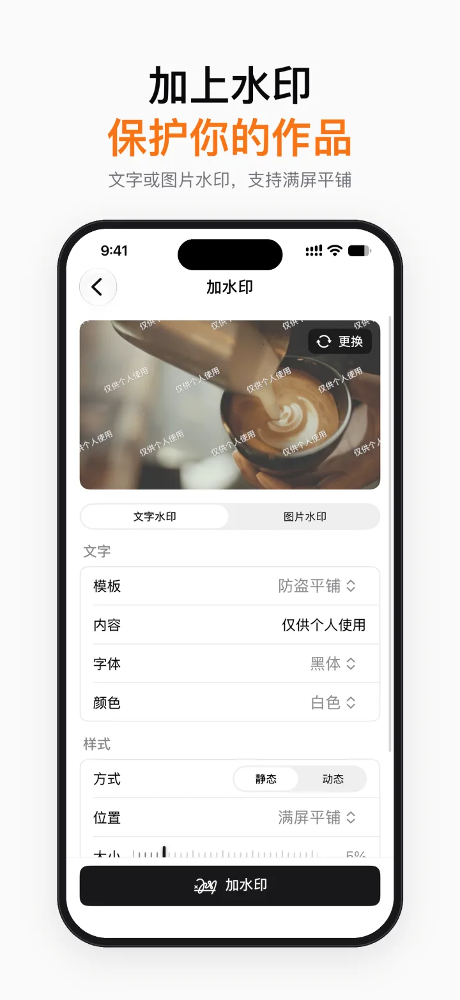
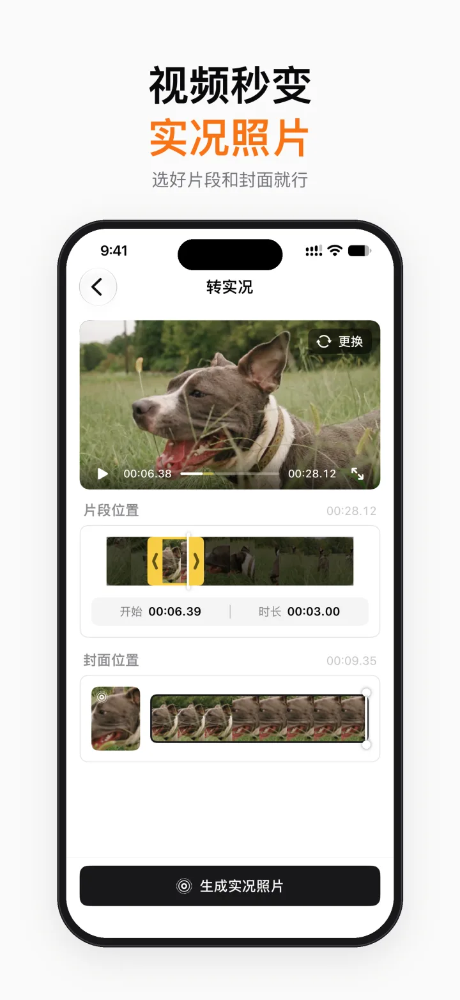
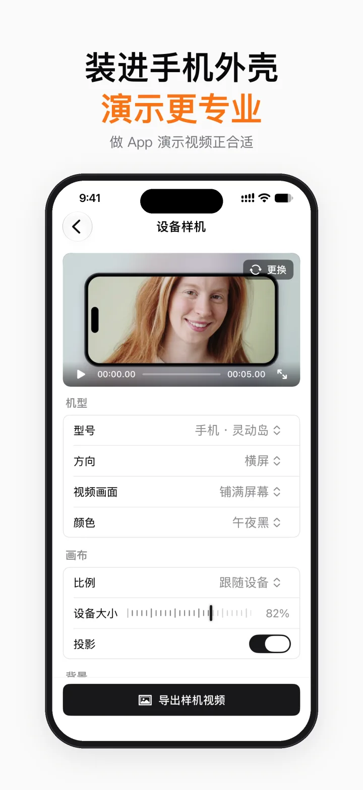

压缩与转换免费
HEVC / H.264 多档可选，压缩前后大小一目了然；MP4 与 MOV 互转。
压缩、画质增强、语音转字幕、人脸打码、调画布、加配乐……所有处理都在手机上完成，视频不上传，成品不带水印，也没有广告。



为什么用微风剪辑
发朋友圈要压缩，发抖音要改竖屏，口播要配字幕，路人要打码。不用再为每件小事装一个 App。
App 里有什么
每个工具都是同一套干净的界面：选素材、调几项设置、导出。预览和成品所见即所得。
HEVC / H.264 多档可选，压缩前后大小一目了然；MP4 与 MOV 互转。
一键去噪点、提升清晰度，最高提升到 1080p。用系统自带的 AI 模型在手机上完成（需要 iOS 26）。
自动识别普通话、粤语、英语，可逐句修改，免费导出 SRT；烧录进视频为会员功能。
15 种滤镜风格；加文字、图片和贴纸，每个元素可拖动、缩放、旋转，并单独设置出现时间。
自动识别人脸并跟着移动打马赛克（会员）；框选水印、台标，用模糊或周围画面盖住。
把视频装进手机、平板、笔记本外壳；把片段做成实况照片，设成会动的锁屏。
添加配乐并分别调音量，提取音频、去除声音、做 iPhone 铃声、文字转语音。
裁剪精确到帧，变速 0.25–4 倍，倒放，拼接加转场，改成 9:16 / 1:1 / 16:9；分屏同框为会员功能。
界面一览






隐私
微风剪辑没有账号，不连服务器，也不放任何统计和广告 SDK。
会员
会员功能每项都可以免费完整体验 1 次，满意再决定。
不限次数，不加水印
每项可免费体验 1 次
月度和年度会员为自动续期订阅，确认购买后从 Apple 账户扣款；除非在当前周期结束前至少 24 小时关闭自动续费，订阅会自动续费，可在「设置 → Apple 账户 → 订阅」中管理或取消。永久会员为一次性购买，不会续费。
常见问题
App 免费下载，大部分功能免费、不限次数、不加水印。人脸打码、设备样机、分屏同框、贴纸文字、转实况、照片轮播和字幕烧录是会员功能，每项可以免费体验 1 次。会员可选月度、年度，或一次买断永久使用。
不会。所有处理都在你的手机上完成，语音识别和画质增强也是离线进行的。App 没有账号，没有统计和广告 SDK。第一次识别某种语言时，系统会自己下载识别模型，这一步由 iOS 完成，不经过我们。
没有。免费功能和会员功能导出的视频，都不会加 App 水印，也没有广告。
需要 iOS 18 或更新的系统。其中“画质增强”用到系统新的 AI 模型，需要 iOS 26。
支持普通话、粤语和英语。识别出来的字幕可以逐句修改，免费导出 SRT 字幕文件；想把字幕直接烧录进视频，需要会员。
取消：打开 iPhone「设置 → Apple 账户 → 订阅」，选择微风剪辑。恢复购买：在 App 首页右上角“设置”里点“恢复购买”。退款由 Apple 处理。